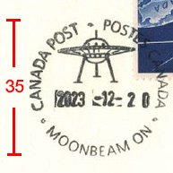

Moonbeam PO pictorial cancel
UFO monument
- Status
- Active
- Run dates
- ? to present
- Design
- UFO monument
- Ink colour
- Black
- Designer
- Unknown
- Post office
- Moonbeam PO
4 Albert St
Moonbeam, ON
P0L 1V0 - Subjects
- space, astronomy, roadside attraction
Collect it by mail. Send your stamped covers, with a stamped return envelope, to the post office address above. How to collect pictorial cancels by mail · en français
 Schumacher POVersion 1
Schumacher POVersion 1 Schumacher POVersion 2
Schumacher POVersion 2 Wawa POWawa Goose Monument
Wawa POWawa Goose Monument Echo Bay POHome of the Loon Dollar Monument
Echo Bay POHome of the Loon Dollar Monument Schreiber POVan Horne's Road / Chemin de Van Horne / 865.4 mi
Schreiber POVan Horne's Road / Chemin de Van Horne / 865.4 mi Tobermory PODolomite sea stacks shaped by erosion on Flowerpot Island
Tobermory PODolomite sea stacks shaped by erosion on Flowerpot Island